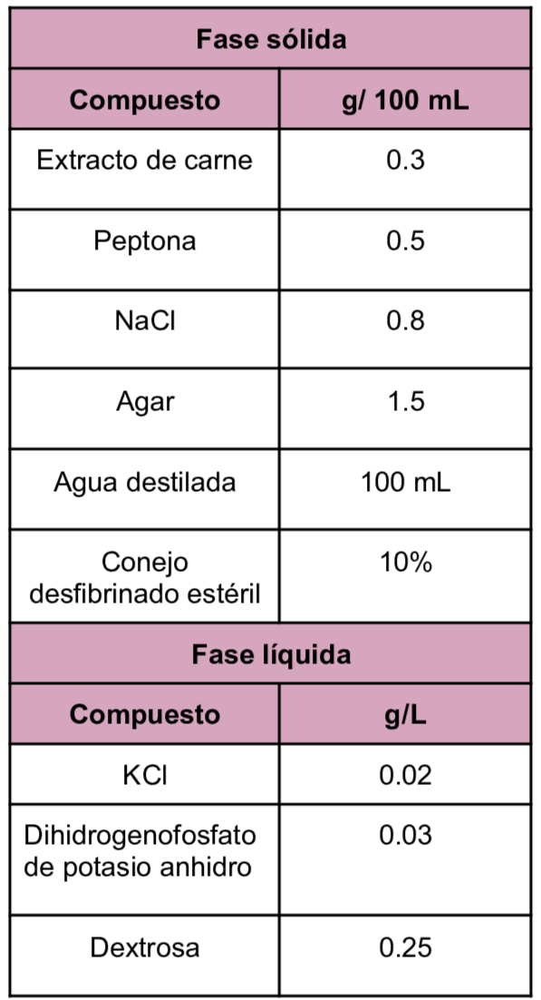
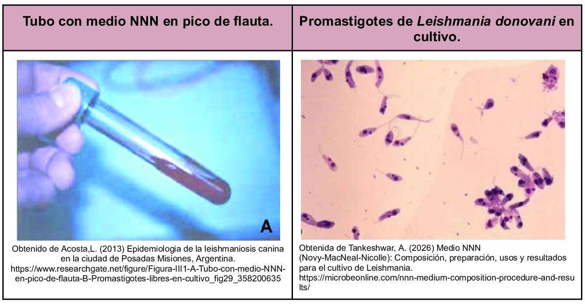

Es un medio bifásico utilizado para el cultivo de
Leishmania y Trypanosoma.
Como se menciona consta de dos fases y se compone de agar sangre como base y que permite favorecer el crecimiento de organismos exigentes. Este medio es el método de referencia para comprobar la presencia de
Leishmania.
Composición

Fase Líquida: pH a 25°C 7.3±0.2
Fase Solída: pH a 25°C 7.0±0.2
El medio NNN se realiza combinando 4 mL de la fase sólida con 2 mL del medio fase líquida.
Resultados

Referencias
Tankeshwar, A. (2026) Medio NNN (Novy-MacNeal-Nicolle): Composición, preparación, usos y resultados para el cultivo de Leishmania. https://microbeonline.com/nnn-medium-composition-procedure-and-results/
Castelli, G. & Et.Al. (2023) Cultivation of Protozoa Parasites In Vitro: Growth Potential in Conventional Culture Media versus RPMI-PY Medium.https://www.mdpi.com/2306-7381/10/4/252